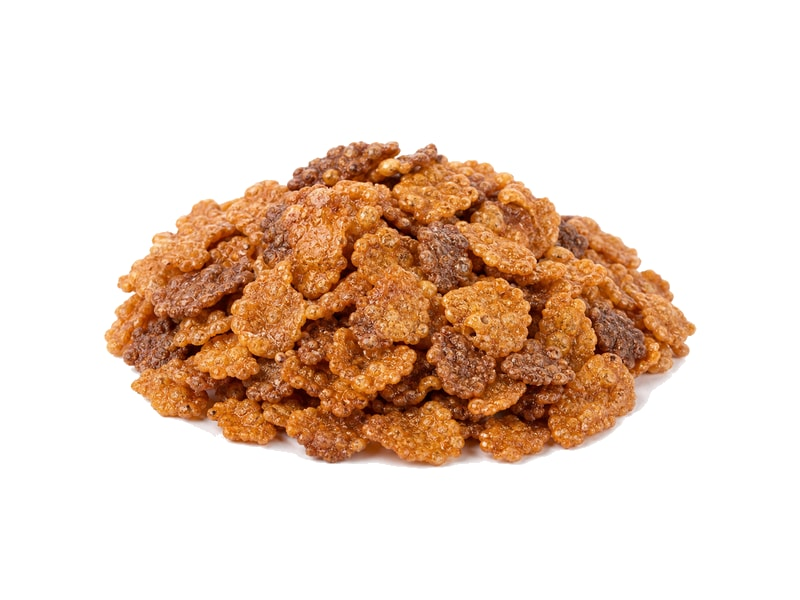

Płatki śniadaniowe
Płatki Lion
Płatki Lion: 8.1 g białka, 406 kcal, 73.2 g węglowodanów i 7.4 g tłuszczu na 100 g. Kategoria: Płatki śniadaniowe.
Kalorie406 kcalna 100 g
Białko / proteiny8.1 g
Węglowodany73.2 g
Tłuszcz7.4 g
Cena (szac.)~1,00 złza 100 g
Ceny zaktualizowano: maj 2026 (szacunek — ceny w popularnych supermarketach)
Porcja: miseczka (30g)
| Kalorie | 122 kcal |
|---|---|
| Białko | 2.4 g |
| Węglowodany | 22 g |
| Tłuszcz | 2.2 g |
| Cena (szac.) | ~0,30 zł |
Szczegółowe składniki odżywcze na 100 g
| Wartość energetyczna (kalorie) | 406 kcal |
|---|---|
| Białko (proteiny) | 8.1 g |
| Węglowodany | 73.2 g |
| Tłuszcz | 7.4 g |
| Tłuszcze nasycone | 1.1 g |
| Tłuszcze nienasycone | 6.3 g |
| Witaminy i minerały | Wapń, Żelazo, Witaminy z grupy B |
| Współczynnik kcal / 1 g białka | 50.1 |
| Cena produktu (szac. za 100 g) | ~1,00 zł |
| Cena za 100 g białka (szac.) | ~12,35 zł |